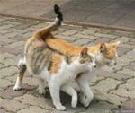
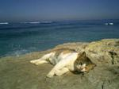
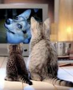
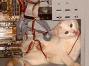
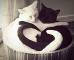
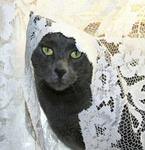
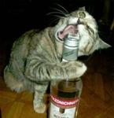
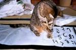
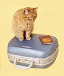

| Protože Lukáš dokončí další část svého studia | |
|  | ...a protože spolu už celkem dlouho chodíme... |
| ...jezdíme po vlasti České... | |
|  | ...i zemích vzdálených... |
| ...fotíme... | |
| ...zpíváme (k velké radosti sousedů)... | |
|  | ...máme rádi film, divadlo a kulturu všeobecně... |
|  | ...vrtáme se v počítačích... |
|  | ...a přes to všechno se máme pořád rádi... |
|  | ...tak si ve svatebním dni... |
| ...řekneme ano... | |
| ...a dáme si první manželské políbení. | |
| Při této příležitosti pořádáme pro rodinu a přátele malou párty... | |
| ...s muzikou... | |
| ...nějakým tím jídlem... | |
|  | ...a pitím... |
| (lepší jíti domů s malou... | |
| ...než s velkou opicí) | |
|  | ...na kterou najdete (nebo nenajdete) pozvánku v oznámení. |
| Nechte, prosíme, doma hmotné dary... | |
| ...prostě se jen přijeďte podívat... | |
| ...nebo nám pošlete blahopřání (raději papírové, ať máme nad čím vzpomínat). | |
 |
Ale pokud byste opravdu trvali na daru, rádi přijmeme jakýkoliv příspěvek... |
|  | ...na svatební cestu, která se uskuteční 18.-28.7. na Sinajském poloostrově. DĚKUJEME! :) |